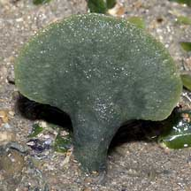
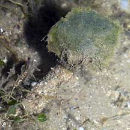
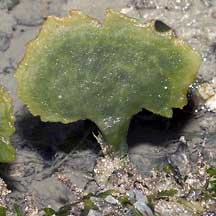
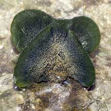
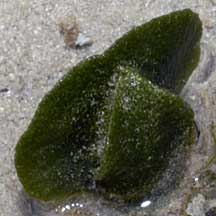
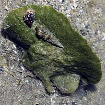
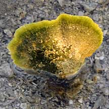

|
|
| green seaweeds text index | photo index |
| Seaweeds > Division Chlorophyta > Avrainvillea species |
| Solitary
fan green seaweed Avrainvillea erecta* Family Udoteaceae updated Oct 2019 Where seen? These solitary stalked green fans are sometimes seen on some of our shores, sticking out of the ground here and there. Usually in coral rubble areas. Features: A paddle-shaped blade (4-5cm wide), usually growing alone, sometime a few near one another. The blade is flat and not ruffled, and may be divided into four or more 'wings'. The flexible blade is made up of a tangle of tiny filaments that give it a velvety texture. The blade is held up on a stiff stalk that may be buried in sand or wedged into crevices. The stalk can be quite long (up to 10cm long), with only a short portion sticking out above the surface. Sometimes, the single blade is divided into three or four 'wings'. Usually dark green sometimes with pale or yellowish edges. Sometimes, tiny Strawberry slugs (Costasiella sp.) are found on this seaweed. Sometimes confused with other fan-shaped green seaweeds. Here's more on how to tell apart fan-shaped green seaweeds. |
 Tuas, Jun 05 |
 Kusu Island, Jun 05 |
 Chek Jawa, May 05 |
|
 Sometimes divided into four or more 'wings'. Pulau Sekudu, Jan 06 |

*Species are difficult to positively identify without close examination.
On this website, they are grouped by external features for convenience of display.
| Solitary fan green seaweeds on Singapore shores |
On wildsingapore
flickr
|
| Other sightings on Singapore shores |
 Pulau Pawai, Dec 09 |
 Pulau Sudong, Dec 09 |
 Pulau Berkas, May 10 |
Links
References
|